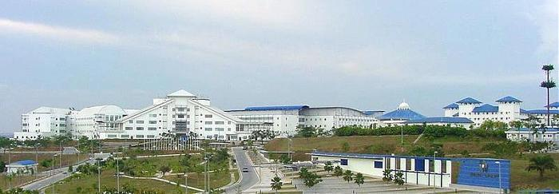

About Multimedia University |
|---|
Multimedia University (MMU) was set up in 1996 by the largest telecommunication company in Malaysia, Telekom Malaysia (TM) Berhad to provide qualified human capital for the new economy. It was launched by the Fourth Prime Minister of Malaysia, Tun Dr Mahathir bin Mohammad on 9th July 1999. |
Now in its 16th years, MMU is internationally renowned for its innovative approaches to education, offering courses in the areas of Engineering, Creative Multimedia, Information Technology, Management and Life Sciences. Currently, MMU has a population of more than 20,000 students, 4,500 of which are international students from over 5 countries. |
MMU was rated 'Excellent University' by Ministry of Higher Education (SETARA Ranking 2009) and listed among the top 5 Universities in Asia in the 'International Student Review' category (QS Top 200 Asian University Ranking, 2010). It has two campuses, one in Cyberjaya and the other in Melaka. |
Cyberjaya Campus |
|---|
Located on a 80-hectare piece of land, the Cyberjaya campus is equipped with various intelligent features such s high speed ATMs, multimedia learning facilities, intelligent building systems and an integrated campus management system. Commencing operations in June 1999, the campus is mere 30 minutes drives from Kuala Lumpur city center and 20 minutes drive from the Kuala Lumpur International Airport (KLIA). Cyberjaya campus houses the Centre for Foundation Studies and Extension Education, Faculty of Engineering, Faculty of Information Technology, Faculty of Management and Faculty of Creative Multimedia. |
|  |
Melaka Campus |
|---|
The campus stands on a 52-acre piece of land strategically located in the vicinity of serene residential areas, booming industrial areas, booming industrial sites and scenic Ayer Keroh tourist spots. Melaka campus comprises the Centre for Foundation Studies and Extension Education, Faculty of Engineering & Technology, Faculty of Information Science & Technology and Faculty of Business & Law. |
 |
 |
Copyright © 2015 . Redza(1102700453) Aiman Nazreen(1102703236) Imran(1112702852) |
| Click Here To Find Out More About Us |